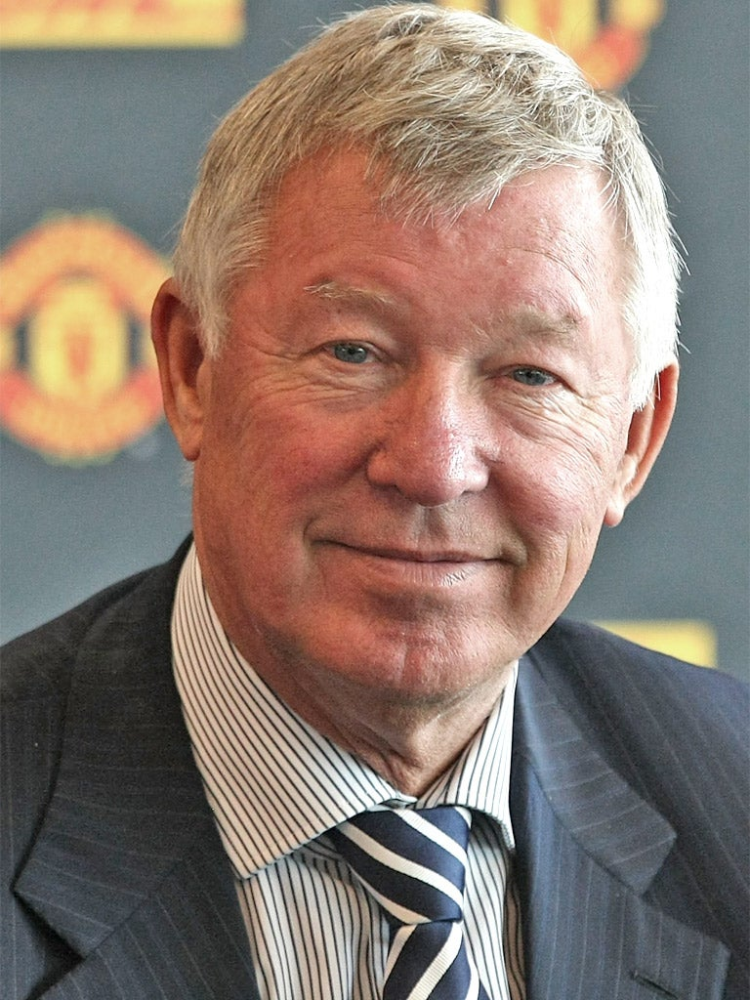

TimeLine
- 1941 – Born on December 31, in Govan, Scotland.
- 1957 – Begins playing career at Scottish club Queen's Park.
- 1974 – Ends six-club playing career and takes charge of Scottish club East Stirling.
- 1978– Becomes manager of Aberdeen in Scottish top division, winning Scottish league for the first time in 1981.
- 1985 – Takes temporary charge of Scotland's national team after death of manager Jock Stein on September 10.
- 1986 – Coaches Scotland at World Cup, where team failed to advance from group.
- 1986 – Becomes Manchester United manager as replacement for the dismissed Ron Atkinson. Leaves Aberdeen with three Scottish titles, four Scottish Cups, one League Cup, a European Cup Winners' Cup and a European Super Cup.
- 1990 – Wins first trophy at United, the FA Cup after a replay against Crystal Palace in the final.
- 1991 – Wins European Cup Winners' Cup after beating Barcelona 2-1 in final.
- 1992 – Signs French forward Eric Cantona.
- 1993 – Wins United's first English title since 1967 and voted Manager of the Year.
- 1994 – Retains English title and also wins FA Cup.
- 1995 – Made Commander of the Order of the British Empire.
- 1996 – Wins Premier League again, this time with youngsters in his team such as David Beckham, Ryan Giggs, Paul Scholes and Gary Neville known as "Fergie's Fledglings".
- 1999 – Wins a historic Premier League-FA Cup-Champions League treble, after winning European Cup for the first time thanks to late goals by Teddy Sheringham and Ole Gunnar Solskjaer in a 2-1 win over Bayern Munich; Becomes a knight; Wins Intercontinental Cup.
- 2002 – Decides to stay on at United after announcing decision to retire at the end of the season. Admits decision to make announcement public was an "absolute disaster".
- 2003 – Launches legal action against then-United shareholder John Magnier over ownership of race horse Rock of Gibraltar; Reportedly kicks football boot into face of Beckham, causing injury to midfielder's face. Beckham sold to Real Madrid that summer; Signs Cristiano Ronaldo from Sporting Lisbon.
- 2007 – Denies Chelsea a third straight English title by winning Premier League with United for ninth time.
- 2008 – Wins Champions League for the second time with victory in a penalty shoot-out over Chelsea, following 1-1 draw; Wins Club World Cup.
- 2009 – Given four-match touchline ban for comments criticising fitness of referee Alan Wiley.
- 2010 – Wins fourth and final League Cup.
- 2011 – United name north stand at Old Trafford as the Sir Alex Ferguson Stand.
- 2013 – United reclaim Premier League title from Manchester City, winning it for 13th time.
| Competition | Wins |
|---|---|
| Premier League | 13 |
| FA Cup | 5 |
| League Cup | 4 |
| Community Shield | 10 |
| Champions League | 2 |
| Cup Winners' Cup | 1 |
| UEFA Super Cup | 1 |
| Intercontinental Cup | 1 |
| FIFA Club World Cup | 1 |
| Total | 38 |
